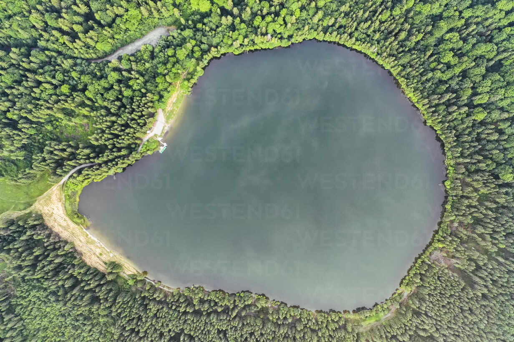
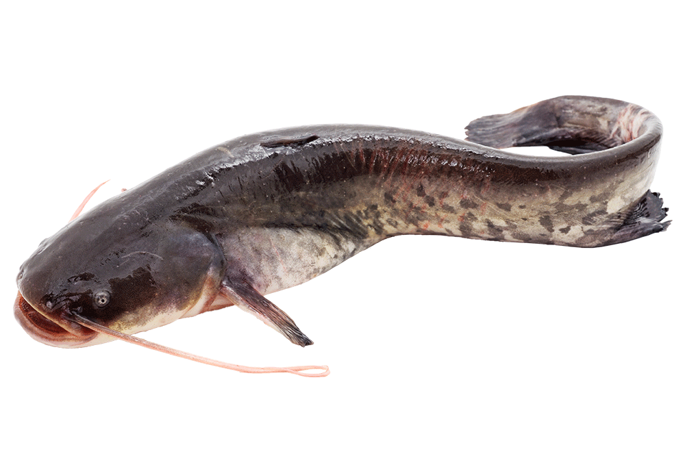
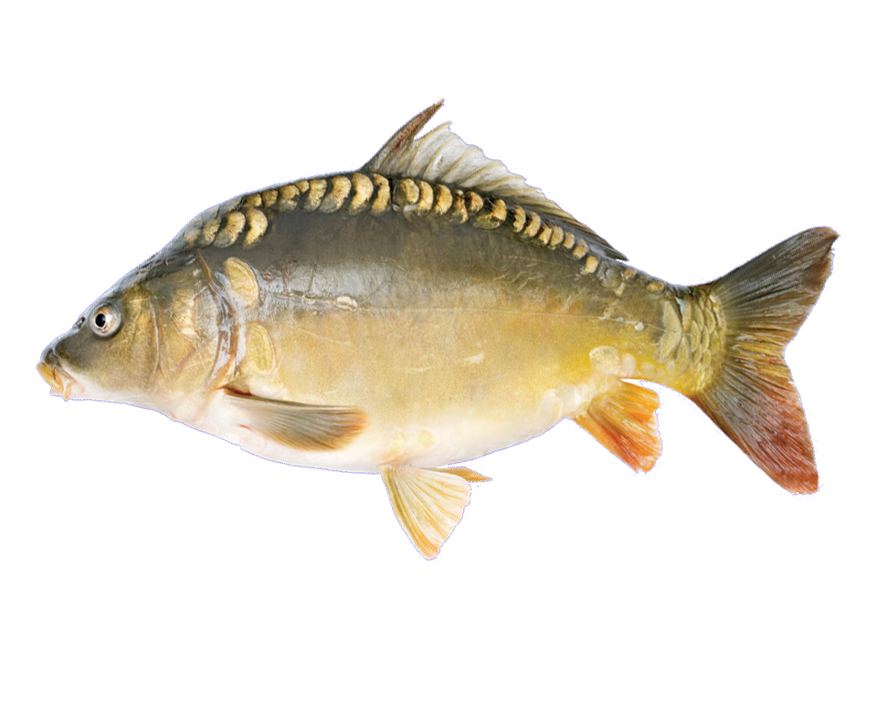

A Dányi tó egy varázslatos természeti kincs, mely Magyarország szívében, Dány településén található. A tó rendkívül gazdag halfajokban, és híres a nyugodt környezetéről, ideális horgászati feltételeiről.
A tóban megtalálható különböző halfajok között szerepelnek a ragadozó halak, mint a süllő, harcsa és a csuka.
Fellelhető továbbá a népszerűbb ponty és amur is.
A változatos halfauna garantálja, hogy minden horgász megtalálja a számára izgalmas és kihívást jelentő horgászhelyet.
Az év során különböző időszakokban érdemes kipróbálni a horgászatot a Dányi tónál. Tavasszal a ragyogó napfényben a halak aktívak és könnyen csalhatók. Nyáron a hűsítő tavizben kellemesen horgászhat, míg ősszel a halak etetési periódusában remek fogásokra számíthat.
Fedezze fel a horgászat varázsát a Dányi Horgásztelepen, ahol minden részletre odafigyelünk annak érdekében, hogy Önnek felejthetetlen élményekben legyen része. Győződjön meg a Dányi tó változatos horgászhelyeiről, és foglalja le a kedvencét még ma!